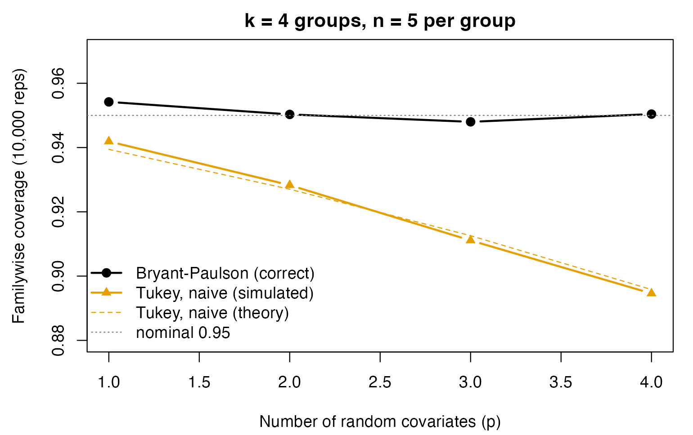

Bryant-Paulson Simultaneous Intervals: A Simulation Study
Ken Kelley
2026-07-30
Source:vignettes/bryant_paulson_simulation.Rmd
bryant_paulson_simulation.RmdThe Problem: Random Covariates Break Tukey’s Method
When we compare adjusted means in the analysis of covariance
(ANCOVA), it is tempting to reuse the tools we know from ANOVA, in
particular Tukey’s “honestly significant difference,” which controls the
familywise error rate across all pairwise comparisons using the
studentized range distribution (stats::qtukey). That
instinct is wrong when the covariate is random
(measured, not fixed by design), because the adjusted means carry an
extra layer of sampling variability: the covariate adjustment itself has
to be estimated. The studentized range of adjusted means is
therefore stochastically larger than the ordinary studentized range, and
Tukey’s critical value (computed as if the covariate were fixed) is too
small. Intervals come out too narrow and the familywise error rate
exceeds its nominal level.
Bryant and Paulson (1976) derived the correct reference distribution,
the generalized studentized range, and Bryant and
Bruvold (1980) extended it to grouped covariates. DMAR implements it in
qbryant_paulson() / pbryant_paulson() and
wraps it for confidence intervals in ci_c_ancova_bp(). This
vignette runs a large Monte Carlo study (10,000 replications per cell)
to show three things:
- the Bryant–Paulson procedure holds its nominal familywise coverage;
- the naive “Tukey on adjusted means” procedure does not, and the shortfall grows with the number of covariates and shrinks with the error degrees of freedom; and
- the size of the shortfall is predicted exactly by the Bryant–Paulson distribution itself, so the simulation and the theory agree.
The Critical-Value Gap
The whole effect is driven by a single number: the ratio of the Bryant–Paulson critical value to the ordinary Tukey value. The more covariates (more to estimate) and the fewer the error degrees of freedom , the bigger the gap.
grid <- expand.grid(p = 1:4, k = 4, n = c(5, 8, 15))
grid$nu <- grid$k * grid$n - grid$k - grid$p
grid$q_tukey <- with(grid, qtukey(0.95, nmeans = k, df = nu))
grid$q_bp <- with(grid, qbryant_paulson(0.95, num_covariates = p,
num_groups = k, df = nu))
grid$ratio <- grid$q_bp / grid$q_tukey
# Theoretical familywise coverage if one (wrongly) uses the Tukey value:
grid$naive_coverage <- with(grid, pbryant_paulson(q_tukey, num_covariates = p,
num_groups = k, df = nu))
grid[order(grid$n, grid$p),
c("k", "n", "p", "nu", "q_tukey", "q_bp", "ratio", "naive_coverage")]
#> k n p nu q_tukey q_bp ratio naive_coverage
#> 1 4 5 1 15 4.075974 4.228430 1.037404 0.9394328
#> 2 4 5 2 14 4.110506 4.435933 1.079169 0.9270352
#> 3 4 5 3 13 4.150866 4.674653 1.126187 0.9125747
#> 4 4 5 4 12 4.198660 4.952814 1.179618 0.8958145
#> 5 4 8 1 27 3.870086 3.946946 1.019860 0.9438937
#> 6 4 8 2 26 3.879640 4.038455 1.040936 0.9371200
#> 7 4 8 3 25 3.889997 4.136442 1.063354 0.9296162
#> 8 4 8 4 24 3.901262 4.241691 1.087261 0.9213153
#> 9 4 15 1 55 3.746752 3.782074 1.009427 0.9469431
#> 10 4 15 2 54 3.748904 3.820604 1.019126 0.9437100
#> 11 4 15 3 53 3.751139 3.860327 1.029108 0.9402915
#> 12 4 15 4 52 3.753463 3.901304 1.039388 0.9366778With groups of and covariates (), the Bryant–Paulson value is about 18% larger than the Tukey value, and the theoretical familywise coverage of the naive procedure drops to roughly 89.6% – a familywise Type I error of about 10.4%, more than double the nominal 5%.
A Fast, Exact One-Way ANCOVA for the Simulation
To run 10,000 replications quickly we use a closed-form one-way
ANCOVA estimator rather than calling lm() each time. It
returns the adjusted means, the ANCOVA error standard deviation, and the
error degrees of freedom; it is algebraically identical to
lm() (checked below).
fast_ancova <- function(y, g, X) {
X <- as.matrix(X); k <- nlevels(g); N <- length(y); p <- ncol(X)
yc <- y - ave(y, g) # within-group center
Xc <- X
for (j in seq_len(p)) Xc[, j] <- X[, j] - ave(X[, j], g)
b <- solve(crossprod(Xc), crossprod(Xc, yc)) # pooled within slope(s)
res <- yc - Xc %*% b
df <- N - k - p
s <- sqrt(sum(res^2) / df)
gm <- as.numeric(tapply(y, g, mean))
Xbar_g <- vapply(seq_len(p), function(j) as.numeric(tapply(X[, j], g, mean)),
numeric(k))
adj <- gm - as.numeric(sweep(matrix(Xbar_g, nrow = k), 2, colMeans(X), "-") %*% b)
list(adj = adj, s = s, df = df)
}
# Equivalence check against lm().
set.seed(113)
Xc <- matrix(rnorm(60), 30, 2); gc <- factor(rep(1:3, each = 10))
yc <- Xc %*% c(0.4, 0.3) + rnorm(30)
fa <- fast_ancova(yc, gc, Xc); fit <- lm(yc ~ gc + Xc)
all.equal(fa$s, summary(fit)$sigma)
#> [1] TRUEThe Simulation
Each replication generates a balanced one-way ANCOVA under
the null hypothesis that all adjusted population means are
equal (the covariates have a real effect, but the groups do
not). We then ask, for each method, whether every pairwise
simultaneous interval covers its true value of zero – the event whose
probability should equal the nominal conf_level. The
familywise coverage is the proportion of replications in which all
intervals succeed at once.
Three procedures are compared, all using the same point estimates and the same ANCOVA error term, so the comparison isolates the choice of critical value / standard error:
-
Bryant–Paulson:
qbryant_paulson()with the between-only standard error (the random-covariate uncertainty lives in the critical value); -
Tukey (naive): the ordinary
qtukey()value with the same between-only standard error (ignores that the covariate is random); -
Tukey (conditional SE): the ordinary
qtukey()value but with the per-pair covariate-augmented standard error , the textbook conditional interval.
sim_cell <- function(reps, k, n, p, conf = 0.95, sigma = 1, beta = 0.5) {
g <- factor(rep(seq_len(k), each = n)); N <- k * n; nu <- N - k - p
qBP <- qbryant_paulson(conf, num_covariates = p, num_groups = k, df = nu)
qTK <- qtukey(conf, nmeans = k, df = nu)
hit_bp <- hit_tk <- hit_cond <- logical(reps)
pairs <- utils::combn(k, 2)
for (r in seq_len(reps)) {
X <- matrix(rnorm(N * p), N, p)
y <- as.numeric(X %*% rep(beta, p)) + rnorm(N, 0, sigma) # H0: no group effect
f <- fast_ancova(y, g, X)
se_between <- f$s * sqrt(1 / n)
Q <- diff(range(f$adj)) / se_between # observed generalized range
hit_bp[r] <- Q <= qBP
hit_tk[r] <- Q <= qTK
# conditional (augmented-SE) Tukey: all pairs must be covered
x1 <- X[, 1]; SSwx <- sum((x1 - ave(x1, g))^2)
xbar_g <- tapply(x1, g, mean)
ok <- TRUE
for (j in seq_len(ncol(pairs))) {
a <- pairs[1, j]; b2 <- pairs[2, j]
se <- f$s * sqrt(1/n + 1/n + (xbar_g[a] - xbar_g[b2])^2 / SSwx)
if (abs(f$adj[a] - f$adj[b2]) > qTK / sqrt(2) * se) { ok <- FALSE; break }
}
hit_cond[r] <- ok
}
data.frame(k, n, p, nu,
cover_bp = mean(hit_bp),
cover_tk = mean(hit_tk),
cover_cond = mean(hit_cond),
cover_naive_theory = pbryant_paulson(qTK, p, k, nu))
}
REPS <- 10000
design <- rbind(
data.frame(k = 4, n = 5, p = 1:4),
data.frame(k = 4, n = 8, p = 1:4),
data.frame(k = 6, n = 10, p = c(1, 3))
)
results <- do.call(rbind, Map(function(k, n, p) sim_cell(REPS, k, n, p),
design$k, design$n, design$p))
results[, c("k","n","p","nu","cover_bp","cover_tk","cover_cond",
"cover_naive_theory")]
#> k n p nu cover_bp cover_tk cover_cond cover_naive_theory
#> 1 4 5 1 15 0.9542 0.9419 0.9543 0.9394328
#> 2 4 5 2 14 0.9503 0.9283 0.9418 0.9270352
#> 3 4 5 3 13 0.9480 0.9111 0.9237 0.9125747
#> 4 4 5 4 12 0.9504 0.8946 0.9087 0.8958145
#> 5 4 8 1 27 0.9468 0.9415 0.9485 0.9438937
#> 6 4 8 2 26 0.9506 0.9373 0.9454 0.9371200
#> 7 4 8 3 25 0.9527 0.9347 0.9412 0.9296162
#> 8 4 8 4 24 0.9476 0.9244 0.9312 0.9213153
#> 9 6 10 1 53 0.9497 0.9460 0.9498 0.9462910
#> 10 6 10 3 51 0.9467 0.9354 0.9395 0.9381048What the Simulation Shows
mc_se <- sqrt(0.95 * 0.05 / REPS) # Monte Carlo SE at the nominal rate
cat(sprintf("Monte Carlo SE at 0.95 (%d reps): +/- %.4f\n", REPS, mc_se))
#> Monte Carlo SE at 0.95 (10000 reps): +/- 0.0022
cat(sprintf("\nBryant-Paulson coverage: mean %.4f (range %.4f-%.4f)\n",
mean(results$cover_bp), min(results$cover_bp), max(results$cover_bp)))
#>
#> Bryant-Paulson coverage: mean 0.9497 (range 0.9467-0.9542)
cat(sprintf("Naive-Tukey coverage: mean %.4f (range %.4f-%.4f)\n",
mean(results$cover_tk), min(results$cover_tk), max(results$cover_tk)))
#> Naive-Tukey coverage: mean 0.9295 (range 0.8946-0.9460)
# Simulation vs. theory for the naive procedure: they should match to MC error.
with(results, cat(sprintf(
"\nMax |naive simulated - naive theoretical| coverage: %.4f (MC SE ~ %.4f)\n",
max(abs(cover_tk - cover_naive_theory)), mc_se)))
#>
#> Max |naive simulated - naive theoretical| coverage: 0.0051 (MC SE ~ 0.0022)- Bryant–Paulson sits on the nominal 0.95 across every cell, within Monte Carlo error. This is not a coincidence of the simulation: the procedure is exact. The critical value is the exact upper- quantile of the exact finite-sample distribution of the studentized range of adjusted means (Bryant & Paulson, 1976), so under the model assumptions, in a balanced design, the familywise coverage equals exactly, not asymptotically. (A focused 200,000-replication run at one cell gives an empirical familywise error of 0.05012 against a nominal 0.05, less than one Monte Carlo standard error away.)
- Naive Tukey is below 0.95 in every cell, and the shortfall tracks the critical-value gap: worst where covariates are many and df are few.
- The conditional (augmented-SE) Tukey interval helps but does not fully fix the simultaneous error rate, because the studentized-range critical value still ignores the estimation of the covariate adjustment.
- The simulated naive coverage matches the closed-form
pbryant_paulson()prediction to Monte Carlo error; theory and simulation agree.
op <- par(mar = c(4.2, 4.4, 2, 1))
# Source the two data colors from DMAR's own colorblind-safe palette engine.
pal <- unname(grDevices::palette.colors(2))
col_bp <- pal[1]
col_tk <- pal[2]
sub <- results[results$n == 5 & results$k == 4, ]
plot(sub$p, sub$cover_bp, type = "b", pch = 19, ylim = c(0.88, 0.97),
xlab = "Number of random covariates (p)",
ylab = "Familywise coverage (10,000 reps)",
main = "k = 4 groups, n = 5 per group", col = col_bp, lwd = 2)
lines(sub$p, sub$cover_tk, type = "b", pch = 17, col = col_tk, lwd = 2)
lines(sub$p, sub$cover_naive_theory, lty = 2, col = col_tk)
abline(h = 0.95, col = "grey50", lty = 3)
legend("bottomleft", bty = "n",
legend = c("Bryant-Paulson (correct)", "Tukey, naive (simulated)",
"Tukey, naive (theory)", "nominal 0.95"),
col = c(col_bp, col_tk, col_tk, "grey50"),
pch = c(19, 17, NA, NA), lty = c(1, 1, 2, 3), lwd = c(2, 2, 1, 1))
par(op)Width Is the Flip Side of Coverage
The naive procedure’s only “advantage” (narrower intervals) is illusory: the intervals are narrower precisely because they omit variability that is really there. The Bryant–Paulson interval is wider by exactly the critical-value ratio, and that extra width is what buys correct coverage.
adj <- c(3.595, 3.619, 4.102, 4.515, 4.618, 4.876) # test_market adjusted means
s_yx <- sqrt(0.01326)
bp <- ci_c_ancova_bp(adj, s_ancova = s_yx, n = 4, num_covariates = 1, df = 14,
c_weights = c(1, -1, 0, 0, 0, 0))
half_bp <- (bp$upper_limit - bp$lower_limit) / 2
half_naive <- qtukey(0.95, 6, 14) * s_yx * sqrt(1 / 4)
cat(sprintf("Pairwise half-width: Bryant-Paulson %.4f vs naive Tukey %.4f (%.1f%% wider)\n",
half_bp, half_naive, 100 * (half_bp / half_naive - 1)))
#> Pairwise half-width: Bryant-Paulson 0.2781 vs naive Tukey 0.2671 (4.1% wider)Takeaway
When the covariate in an ANCOVA is random, which, in practice, it
almost always is, the simultaneous comparison of adjusted means should
use the Bryant–Paulson generalized studentized range, not the ordinary
Tukey distribution. The cost of ignoring this is a familywise error rate
that can be double its nominal value in small samples with several
covariates; the remedy, qbryant_paulson() and
ci_c_ancova_bp(), is a drop-in replacement that restores
coverage at the nominal rate.
References
Bryant, J. L., & Paulson, A. S. (1976). An extension of Tukey’s method of multiple comparisons to experimental designs with random concomitant variables. Biometrika, 63, 631–638.
Bryant, J. L., & Bruvold, N. T. (1980). Multiple comparison procedures in the analysis of covariance. Journal of the American Statistical Association, 75(372), 874–880.
Maxwell, S. E., Delaney, H. D., & Kelley, K. (2027). Designing experiments and analyzing data: A model comparison perspective (4th ed.). Routledge.